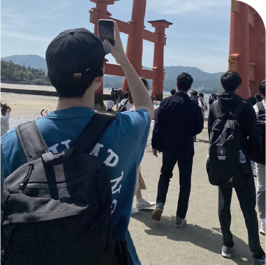
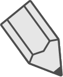
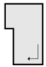

ABOUT ME
Scroll
ABOUT ME

Name： Isokawa Yuki
1997年11月、大阪出身。大学卒業後に通販会社に入社し、WEBデザインに興味を持つ。
半年程独学で勉強後WEBスクールに入学。WEBデザインやコーディングについて勉強中。
趣味：バンドのライブに行くこと、プロ野球観戦
SKILL

Hearing
お客様の希望をヒアリングし、お客様の希望を形にします。WEBデザインは準備が大事なため、何度も何度もヒアリングし、情報の整理をします。
Design
ヒアリングした内容を基づいて、llustratorとPhotoshopを使用してデザインを作成します。 お客様の希望のデザインを、シンプルかつ見やすく表現することを意識しています。

Coding
HTML、CSS、Javascript、jQuaryを使用してコーディングを実装します。PC、スマホ共に見やすいサイトを意識しています。 Javasuriptなどを使用した、少し遊び心を入れた動きのあるサイトも作成可能です